The simplest cumulated diene is 1,2-propadiene, CH2=C=CH2, also known as allene. Indeed, cumulated dienes are often called allenes. The central carbon in such compounds is sp-hybridized (it has only two bonding partners), and the double bond array is linear as a result. Since the π-bonds of allenes are orthogonal, the planes defined by the end carbon substituents are also orthogonal. As shown in the following diagram, the overall configuration of allenes resembles that of an elongated tetrahedron. An interesting consequence of this configuration is that allenes having two different substituents on each of the terminal carbon atoms are chiral.
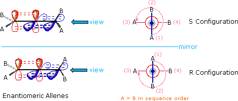
The above diagram shows an allene with different substituents (A & B) on each of the terminal (sp2) carbon atoms. The enantiomeric configurations are displayed relative to a mirror plane placed to illustrate their mirror-image relationship. To assign a stereochemical prefix, i.e. R or S, to these configurations we must view them from one end (it doesn't matter which), as shown in the Newman-like projection on the right. If the sequence order of substituents is A > B, then the two substituents nearest the viewer are assigned a ranking of 1 (A) and 2 (B), while the remote substituents are given rankings of 3 (A) and 4 (B). Applying the viewing rule then leads to the configurational notation shown above. This procedure may be used even when the A & B substituents on one sp2 carbon are different from those on the other sp2 carbon.
Models of 2,3-pentadiene enantiomers may be examined by .
More than two double bonds may have a cumulated structure, as we find in 1,2,3-butatriene (CH2=C=C=CH2) and 1,2,3,4-pentatetraene (CH2=C=C=C=CH2). The carbon atoms in such cumulenes all have a linear configuration, but the configuration of the terminal substituents depends on the number of cumulated double bonds. For an even number of double bonds, an orthogonal configuration of terminal substituents (as in allene) will be observed. For an odd number of double bonds, the terminal substituents and all the carbons between them will lie in a plane. If the terminal substituents at each end are different, the even double bond compounds will have enantiomeric stereoisomers; whereas, the odd double bond compounds will exist as cis-trans diastereoisomers.
Some instructive physical properties of a simple cumulated diene, 1,2-butadiene, compared with its conjugated diene and alkyne isomers are presented in the following table. From the heats of hydrogenation we see that the methylallene is thermodynamically the least stable of these isomers, with the conjugated diene being most stable. The ionization potential is intermediate between the alkyne and the conjugated diene (note than an electron volt is equivalent to 23.05 kcal/mol), suggesting that the pi-electrons in the allene are less strongly bound than in the alkyne. Finally, the gas phase basicity or proton affinity is close to that of the conjugated diene, and slightly greater than that of the alkyne.
Allenes undergo the usual electrophilic addition reactions, and one of the double bonds may even serve as a dienophile in a Diels-Alder reaction. However, the regioselectivity of electrophilic addition may seem surprising when examined with reference to the generally accepted order of cation stability.
Thus, addition of HBr to allene gives 2-bromopropene not 3-bromopropene (allyl bromide). From the relative stability of vinyl and allyl cations the latter product would be expected.
To understand why the reaction path proceeding by way of an allyl cation is not favored here we must recall the orthogonal orientation of the two pi-electron systems. As shown in the following diagram, protonation of the center, sp-hybridized, carbon atom generates an allyl-like carbocation, but the empty p-orbital of this cation (red) is initially oriented 90º to the π-orbital (blue) of the adjacent double bond, so no conjugation can occur. In order to acquire the stabilization and charge delocalization expected for an allyl cation, a 90º rotation about the bond joining the carbocation to the double bond must take place. Since this can only occur after the carbocation is fully formed, the transition state for central carbon protonation has the high activation energy associated with any 1º-carbocation formation. Indeed, the inductive effect of the adjacent double bond probably raises the transition state energy even further. Consequently, formation of a 2º-vinyl cation by protonation at an end carbon (bottom equation) is kinetically favored.
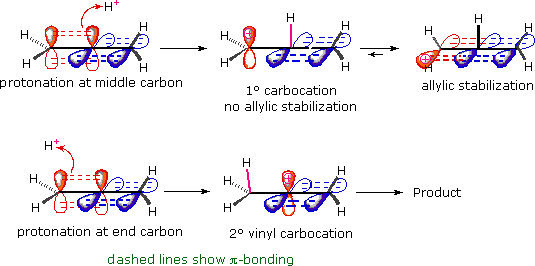
Some other addition reactions to allenes are shown in the following equations. The first example demonstrates that bromine adds readily to one of the allene double bonds. The inductive effect of the halogens retards addition of a second equivalent of bromine, but this may take place under more forcing conditions. The oxymercuration example results in nucleophile (water) bonding to a terminal carbon, probably because SN2 opening of the cyclic mercurinium intermediate is favored at that site. The last example is interesting because it shows that independent stabilization of a terminal carbocation, e.g. by benzyl resonance, changes the initial site of electrophilic attack to the central (sp-hybridized) carbon. The resulting stabilized cation may then achieve further stabilization by rotating to conjugate with the remaining double bond. The two isomeric addition products shown here come from nucleophile bonding at both ends of the resulting allyl cation intermediate.
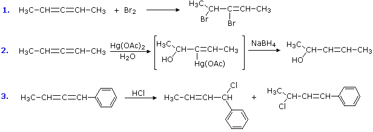
This page is the property of The Edvibe Team. Comments, questions and errors should be sent to contact@edvibe.co.ke. These pages are provided to the IOCD to assist in capacity building in chemical education. 05/05/2013
A facile reduction of benzene and substituted benzenes is achieved by treatment with the electron rich solution of alkali metals, usually lithium or sodium, in liquid ammonia. This reaction, which is called the Birch Reduction in honor of Australian chemist A.J.Birch, is related to the reduction of alkynes to trans-alkenes. Reduction is believed to occur by a stepwise addition of two electrons to the benzene ring, each electron addition being followed by a protonation, as illustrated in the following diagram. The initial electron addition gives a radical-anion for which many resonance contributors may be written. Following delivery of a proton by the weak acid ammonia, the resulting delocalized radical accepts a second electron to give an anion. The anion generated by the second electron addition is delocalized over three carbon atoms, and is protonated on the central carbon. The isolated (unconjugated) double bonds in the product do not react under these conditions.
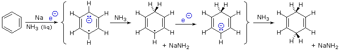
When substituents are present, they may influence the regioselectivity of the Birch reduction. The product is determined by the site of the first protonation, since the second protonation is nearly always opposite (para to) the first. Electron-donating substituents such as ethers and alkyl groups favor protonation at an unoccupied site ortho to the substituent; whereas electron-attracting substituents such as carboxyl favor para protonation. The influence of a carboxyl group dominates poly substituted rings, and alkoxy groups have a greater directing influence than alkyl substituents. An oxy anion group, as in the conjugate base of phenol, prevents reduction from occurring. Two examples of such Birch reductions are shown below. Although the substrate molecule in the first reaction may appear very complex, it is essentially a rigid framework with a benzene ring at each end. The phenolic function on the left hand ring becomes a phenolate anion under the reduction conditions, and does not react further. The right hand aromatic ring is an ether, and it reduces as expected. The carboxylic acid in the second example is immediately converted to its conjugate base. Although this carboxylate anion is negatively charged, it still has an electrophilic carbon atom which acts to stabilize an adjacent negative charge as shown. After protonation of the para carbanion by ammonia, the carboxylate dianion remains unchanged until it is doubly protonated by a strong acid, such as NH4(+) or H3O(+).
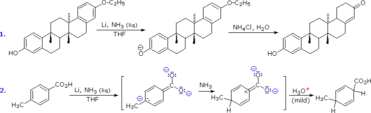
Further examples of Birch reductions are presented in the following diagram. The preference for protonation at unsubstituted sites (unless electron withdrawing groups are present), and for unconjugated products is again illustrated in the first reaction. Note that the isolated double bonds are not reduced at the low temperatures of refluxing liquid ammonia (–33 ºC). Reactions #2 & 4 illustrate a particularly useful application of the Birch reduction. Aryl ethers are reduced to 1,4-dienes, as expected, but one of the double bonds is an enol ether and is readily hydrolyzed to the corresponding ketone. If mild acid catalysis is used, the other double bond remains unchanged; more vigorous acid (or base) treatment shifts this double bond to a conjugated location if simple proton shifts permit. The 3rd reaction again illustrates the regio-directive influence of a carboxyl group, even in the carboxylate form. The alpha-anion is sufficiently stable that it may induce an elimination reaction (first stage) and upon regeneration be alkylated by a reactive alkyl halide (second stage). The last example shows the Birch reduction of pyridine to a bis-enamine, hydrolysis of which gives a diketone.
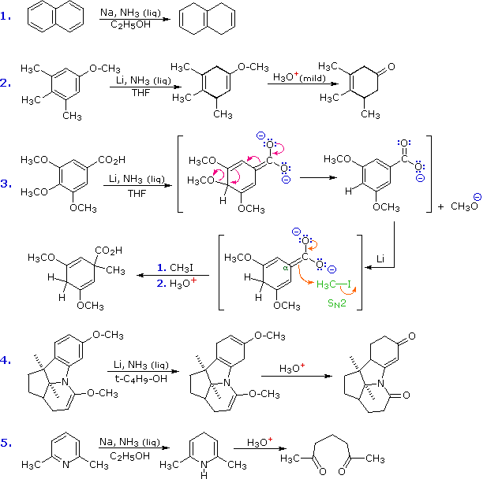
Reduction of alkynes and benzene rings by solutions of sodium or lithium in liquid ammonia have been described. Other reactive metals, such as zinc and magnesium have played a role in reductions of aldehydes and ketones (Clemmensen reduction), alkyl halides and vicinal-dihalides. The ability of certain metals to donate electrons to (reduce) electrophilic or unsaturated functional groups has proven useful in several reductive procedures. The facility with which various of these metals donate electrons is given by their reduction potentials. From these potentials the qualitative order of reducing power is: Li > K > Na > Mg > Al = Ti > Zn > Fe > Sn.
Lithium, sodium and potassium reduce ketones by a one-electron transfer that generates a radical anion known as a ketyl. Once such a reactive species is formed, it may react further by several modes, as described in the following diagram. If a proton source is present, the ketyl undergoes carbon protonation, and the resulting oxy radical adds another electron to generate an alkoxide salt. Alternatively, ketyls may dimerize to pinacol salts. Isolation of alcohol or pinacol products requires further protonation by acids at least as strong as water or ethanol. The H+ notation refers to any of several possible proton sources, including ammonia, alcohols and the ammonium cation (a strong acid in the liquid ammonia system). Benzophenone (diphenyl ketone) forms a deep blue ketyl which is stable in solvents that lack acidic hydrogens, such as hydrocarbons and ethers. It is widely used as an indicator of oxidizing or acidic impurities during the purification of such solvents.
The solvents used for alkali metal reductions include hydrocarbons, ethers and, most commonly, liquid ammonia. Alcohols may also be used, but usually as co-solvents, since they react vigorously with these metals. Examples of metal reductions of ketones to alcohols and pinacols (a dimeric diol) are shown below. In the first example, reduction of benzophenone in liquid ammonia gives both alcohol and pinacol products. The ketyl intermediate in this reaction is stabilized by phenyl substituents, and competitive carbon atom protonation and dimerization generate alkoxide salts that remain in solution until hydrolyzed prior to product isolation. In the second reaction, two isolated ketone functions are reduced to alcohols. The ketyl intermediates are not stabilized, and their rapid protonation is assured by the alcohol cosolvent. Conformational motion is restricted by the rigid polycyclic carbon framework of the substrate, and an interesting stereoselectivity is revealed: both alcohols are formed as the equatorial isomer. Aldehydes are not usually reduced in this manner, because they react with ammonia to form unreactive imine condensation products.
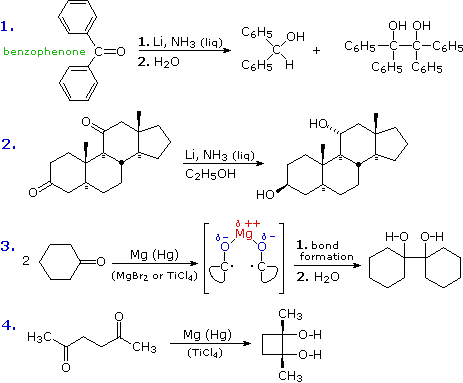
When pinacol products are desired, a less reactive metal having stronger (less ionic) C-O bonds is chosen for the reduction. Magnesium is often used, and best results have been achieved when the metal is activated by amalgamation (alloyed with mercury) and Lewis acids are present. Equations #3 & 4 (above) illustrate pinacol reduction. A di-positive cation may serve to hold two associated ketyl moieties close to each other so that bonding is facilitated (as shown in equation #3). Hydrolysis of metal alkoxides releases the product.
Ester functions undergo similar reductions on treatment with sodium. The most useful reaction of this kind is the acyloin condensation. To avoid protonation at carbon, this reaction is normally carried out in hydrocarbon solvents. The acyloin condensation creates alpha-hydroxy ketones. Two examples of this reaction are shown here. The second illustrates the usefulness of this reaction for constructing medium and large-sized rings. By clicking the "Show Mechanism" button a diagram for a possible mechanism for the acyloin condensation will be displayed. The reduction of alpha-diketones to acyloins, as shown on the second line, can be carried out independently.
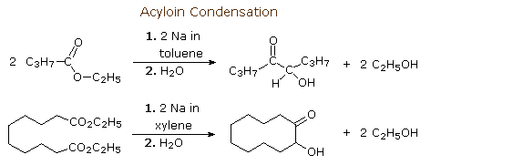
The partial negative charge on the carbon atom of a ketyl may serve to eliminate an electronegative substituent at an alpha-location. If further reduction is not desired, aluminum or zinc are often selected for this reductive elimination. The following examples illustrate three such transformations, the first being a useful conversion of acyloins to ketones.
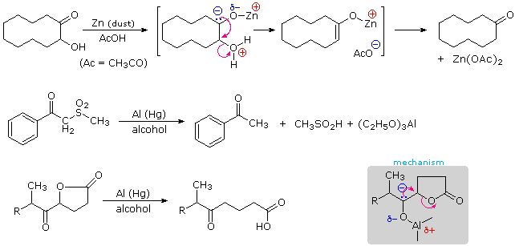
Two or more different functional groups are sometimes found together, and interaction of one upon another may lead to unexpected chemistry. The addition reactions of conjugated dienes are one example of this phenomenon. A similar situation occurs in conjugated enones, compounds in which a carbonyl group is bonded to a carbon-carbon double bond.
(an α,β-unsaturated ketone or enone)
Such functional combinations are often prepared by an aldol condensation, and are particularly useful as synthetic intermediates. Because the π-electron systems of the two functional groups are conjugated (the π-orbitals overlap in space), the radical anion formed by electron addition from a reducing metal is a resonance hybrid of six canonical structures. In addition to the two ketyl contributors described above, two structures having radical and nucleophilic character at the beta-carbon are shown in the following diagram, and two others in which the radical anion character is localized on the double bond are probably least important.
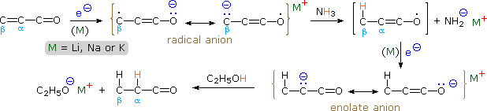
The usual fate of the extended ketyl described here is protonation (or other electrophilic bonding) at the beta-carbon atom. This creates an enoxy radical which immediately accepts an electron to form an enolate anion. Protonation or alkylation of this enolate species then gives a saturated ketone, which may be isolated or further reduced depending on the reaction conditions. Four examples of such reactions are shown below.
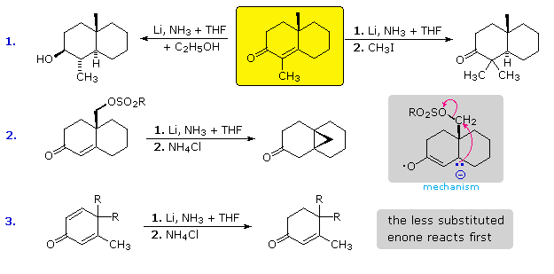
In example #1 the enone substrate is drawn in the yellow box. If the lithium reduction is carried out in liquid ammonia without any acidic co-solvents, the enolate anion is stable and remains unchanged until an electrophilic reagent such as methyl iodide is added. This is shown for the reaction to the right. If an acidic cosolvent such as ethanol is present, the enolate anion is protonated, and the resulting ketone is then reduced to an alcohol (reaction to the left). Although the radical anion intermediate usually undergoes protonation at the beta-carbon, this is not a fast reaction in liquid ammonia. Example #2 presents an interesting case in which intramolecular alkylation of the beta-nucleophile occurs faster than protonation. Example #3 is a case of cross-conjugation. The carbonyl group is conjugated with one or the other double bond, but not both simultaneously. Two different radical anions may be formed by electron addition, and these exist in equilibrium with each other. Protonation at a beta-carbon effectively traps a radical anion as its related enolate anion, preventing any further interconversion. This protonation is fastest at the less substituted site (upper enone), and if the resulting enolate anion is not converted to its keto form by in situ protonation, it will not react further until quenched by ammonium ion. Conjugated dienes are also reduced by sodium or lithium solutions in liquid ammonia. 1,3-Cyclohexadiene is reduced to cyclohexene, but the unconjugated 1,4-diene is not. If a double bond is conjugated with a benzene ring, as in styrene, it is likewise reduced.
A useful procedure for the reductive alkylation of ammonia, 1º-, & 2º-amines, in which formic acid or a derivative thereof serves as the reducing agent, is known as the Leuckart Reaction. Some examples of this reaction are shown below.
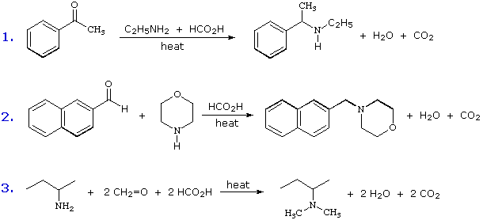
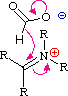
Although most aldehydes and ketones do not form stable hydrates or hemiacetals, a number of interesting exceptions are known. Some examples are shown here.
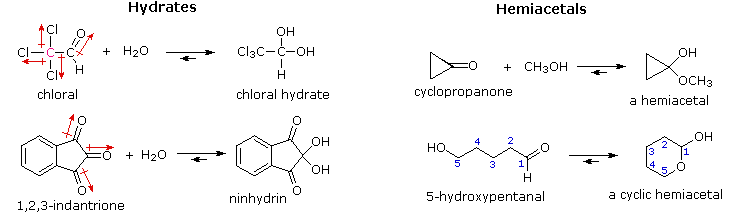
The factors that act to favor hydrate or hemiacetal formation include inductive charge repulsion (chloral) dipole repulsion (ninhydrin) and angle strain (cyclopropanaone). It is important to note that cases in which 5 or 6-membered cyclic hemiacetals can form usually favor such constitutions. The simple sugars offer many examples of this kind. Because these additions are readily reversible, all compounds of this type exhibit carbonyl-like chemical reactivity.
A striking demonstration of kinetic control vs. thermodynamic (equilibrium) control of products is provided by an experiment in which equimolar amounts of cyclohexanone, furfuraldehyde and semicarbazide are mixed in a buffered solvent at pH=5.
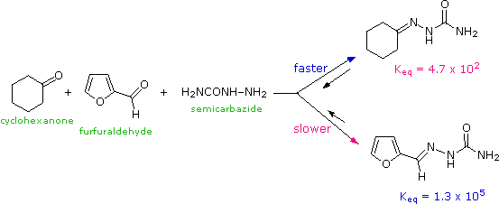
The semicarbazide reacts with cyclohexanone 60 times faster than it does with the aldehyde, and within 45 seconds a nearly quantitative amount of the semicarbazone derivative of cyclohexanone has precipitated and may be isolated by filtration. However, if the initial reaction mixture containing the cyclohexanone product is refluxed for a few hours an equally good yield of the more stable furfuraldehyde semicarbazone is obtained. Note that in both cases the semicarbazone derivative is favored over the initial reactants, but the equilibrium constant for the aldehyde is about 300 times greater than that of the ketone. The aldehyde semicarbazone is therefore the thermodynamically favored product, assuming there is equilibrium at all steps.
Another commonly used carbonyl derivative is prepared from 2,4-dinitrophenylhydrazine, as shown below. The reagent and its hydrazone derivatives are distinctively colored solids, which can be isolated easily. Saturated ketones and aldehydes are usually yellow to light orange in color. Conjugation of the carbonyl group with a double bond or benzene ring shifts the color to shades of red.
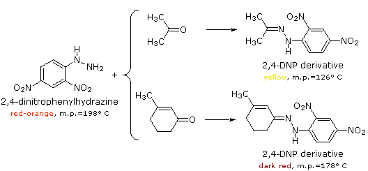
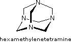
Among aldehydes, formaldehyde, H2C=O, has many unique properties. For example, with ammonia it reacts in a 3:2 ratio to give a tricyclic product, shown on the right, and known as hexamethylenetetramine. This interesting compound may function as an ammonia derivative for the synthesis of 1º-amines, or as a convenient high-melting source of formaldehyde by way of acid-catalyzed hydrolysis.
An interesting reagent that distinguishes aldehydes from ketones is the hydrazine derivative, 4-amino-3-hydrazino-5-mercapto-1,2,4-triazole, best known as Purpald (formula shown below). Although this reagent reacts with both aldehydes and ketones, only the aldehyde product is further oxidized to a purple, 10 π-electron aromatic heterocycle on exposure to air. Note that the pair of electrons on the nitrogen atom common to both rings is part of the π-electron system.
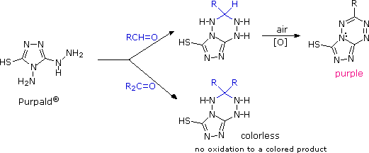
Specific examples of enol tautomer and enolate anion concentrations for three different compounds are shown in the following table.
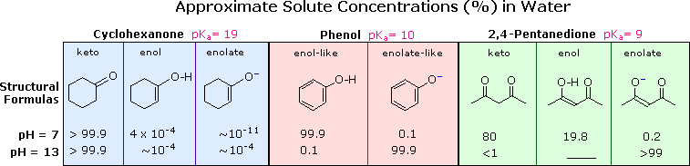
Cyclohexanone is a typical monoketone. Both the enol and enolate anion concentrations are very small, even at pH=13. Phenol serves as a model for the enol tautomer of cyclohexanone, the aromaticity of the benzene ring stabilizing the hydroxyl form. The enhanced acidity of phenols was explained by charge delocalization in the conjugate base, a characteristic that is confirmed by facile electrophilic substitution of the aromatic ring. Although simple ketones have small equilibrium enol concentrations, carboxylic acid derivatives such as esters and amides have even less enol, and are weaker alpha-carbon acids. The beta-dicarbonyl compound, 2,4-pentanedione, is remarkable in having a much higher enol concentration than monocarbonyl aldehydes and ketones. Enol concentration is solvent dependent, being greater than 90% in hexane solution. The acidity of the diketone is also increased substantially, reflecting charge delocalization over both oxygens.
(–)O–C=C–C=O O=C–C=C–O(–)
The chemical behavior of beta-dicarbonyl compounds reflects their increased enol concentration and acidity. Substitution reactions, such as halogenation and isotope exchange, occur more rapidly at the central methylene group of 2,4-pentanedione than at the terminal methyl groups. Furthermore, the corresponding enolate anion may be generated in hydroxylic solvents, using common bases like sodium or potassium hydroxide. Two other beta-dicarbonyl compounds commonly used in organic synthesis are ethyl acetoacetate, a beta-ketoester, and diethyl malonate, a diester. The weaker influence of the ester carbonyl on enolization and acidity is evident from the data in the following table. Even though diethyl malonate is the weakest acid of the three, it is easily converted to its enolate base by treatment with sodium ethoxide in ethanol. Useful nucleophilic intermediates of this kind are frequently employed in synthesis when suitable beta-dicarbonyl reactants are available.
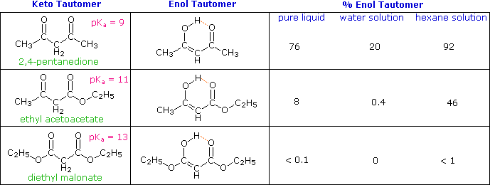
E2 elimination reactions are commonly bimolecular and prefer an anti-coplanar transition state. This important class of functional transformations is complimented by a small group of thermal, unimolecular syn-eliminations, described in the following table. The syn or suprafacial character of these eliminations is enforced by the 5- or 6-membered cyclic transition states (A & B) by which they take place.
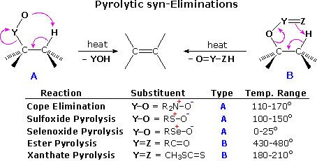
The temperature variations noted in the table suggest that these eliminations are facilitated by a negative charge on the O or Z atom and a low C–Y bond energy. Amine oxides have a full negative charge on the oxygen, and the Cope elimination proceeds well at temperatures near or slightly above 100 ºC. Together with the Hofmann elimination, Cope eliminations have proven useful for removing a permethylated amino group from a larger molecule. Sulfoxides are eliminated to sulfenic acids at roughly similar temperatures as the amine oxides. Here, oxygen charge neutralization by p-d bonding to the positive sulfur atom is balanced by the weaker C–S bond. Selenoxides eliminate rapidly at low temperature, reflecting a greater charge on oxygen due to poorer p-d bonding (selenium is much larger than oxygen), and a weak C–Se bond. Although a six-membered transition state is relatively unstrained, esters and thioesters of alcohols require higher temperatures for elimination. This is expected because of the stronger C–O bond and the lower polarity of C=Z. The thioester function of xanthate derivatives of alcohols undergoes elimination at much lower temperatures than carboxylic esters, probably reflecting a favorable bond energy change from O–C=S in the xanthate to S–C=O in the eliminated fragment.
Some examples of these syn-thermal eliminations are given in the following diagram. The ester pyrolysis in equation # 4 demonstrates the importance of a cis-alignment of the eliminating groups, in this case the acetate ester and the vicinal hydrogen atom. Xanthate ester pyrolysis (equation # 5) is known as the Chugaev (or Tschugaev) reaction. Finally, the conversion of 1º-alcohols to aryl selenium ethers prior to selenoxide elimination, as in example # 3, is carried out via a hypervalent phosphorus species similar to that involved in the Mitsunobu reaction. The preferred aryl group in the selenocyanate reagent is o-nitrophenyl.
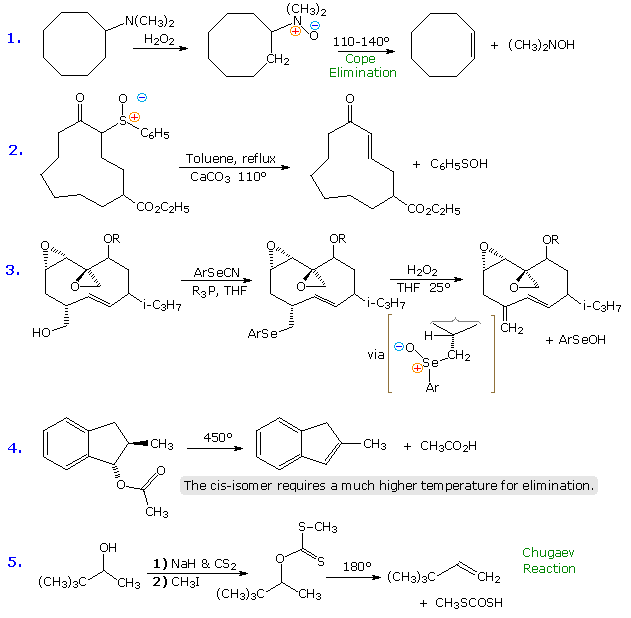